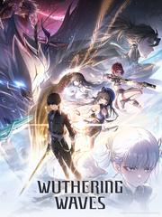

Wuthering Waves
Detalles
 |
|
| Tiempo de juego | No Jugado |
| Última actividad | Nunca |
| Añadido | 7/7/2025 14:54:33 |
| Modificado | 7/28/2025 21:17:06 |
| Estado de finalización | Not Played |
| Librería | Steam |
| Fuente | FREE TO PLAY |
| Plataforma | PC (Windows) |
| Fecha de lanzamiento | |
| Puntuación de la Comunidad | 88 |
| Puntuación de la Crítica | |
| Puntuación de usuario | |
| Género | Acción Aventura Free to Play Rol |
| Desarrollador | KURO GAMES |
| Editor | KURO GAMES |
| Característica | Compat. Parcial Con Mando Compras Dentro De La Aplicación Un Jugador |
| Enlaces | Punto de encuentro Discusiones Guías Noticias Página de la tienda PCGamingWiki |
| Tag | 3D Acción Anime Aventura Buena trama Combate Contenido sexual Cooperativos Exploración Free to Play Gran banda sonora Hack and slash Multijugador Mundo abierto Posapocalípticos Roguelike de acción Rol Tercera persona Tipo «Dark Souls» Un jugador |
Descripción
Wuthering Waves es un juego de rol de mundo abierto lleno de historias y que permite un alto grado de libertad de juego. Despiertas como Errante, acompañado de un elenco vibrante de Resonadores, en un viaje para recuperar tus recuerdos perdidos, explorar y transformar el mundo.
Estamos trabajando para solucionar los problemas de compatibilidad de Wuthering Waves con STEAM DECK y compartiremos actualizaciones en la comunidad. ¡Gracias por su comprensión!

Te damos la bienvenida, Errante.
La marea desciende dejando un silencio pesado.
Golpeada por la Lamentación, la humanidad y sus antiguas creaciones sufren como si se hubieran encallado en un arrecife.
Sin embargo, contraatacan con un grito rompe el silencio.
La calamidad que trae la destrucción también envía el resurgimiento. Un nuevo mundo ha nacido.
Errante, este es solo el comienzo de la historia, la tuya.
Amigos que conocer, adversarios que derrotar, poderes nuevos que obtener, verdades secretas que descubrir y espectáculos nunca antes vistos que contemplar. Un mundo inmenso de infinitas posibilidades te aguarda. Pero la elección es tuya. Sé la respuesta, sé el líder y sigue los sonidos para llegar a un nuevo futuro..
Partimos mientras la marea sube y baja.
Levántate, Errante, esta es tu odisea.
La civilización, devastada por el Lamento, renace / Adéntrate en un mundo creciente
En este juego de mundo abierto, no solo puedes correr rápidamente, sino que también puedes convertirte en un maestro del parkour al superar todo tipo de obstáculos: volar, trepar hacia arriba, saltar entre paredes, usar el gancho para atravesar la ciudad...

Golpea rápido y pon a prueba tus habilidades y participa en combates ágiles y frenéticos
Enfréntate a los ataques enemigos en combates suaves y rápidos. Aplica controles sencillos de Evasión, Contraataque evasivo, Habilidad de Eco y mecanismos únicos de QTE para ofrecer una experiencia de combate óptima.

Viaja junto a tus compañeros y sus Fortes. Encuentra más resonadores
Con habilidades únicas y diversas, los Resonadores con diferentes habilidades y caracteres se convertirán en tus compañeros de viaje. Juntos, emprenderán un viaje hacia lo infinito.

El poder de tus enemigos, en tus manos. Colecciona ecos que te ayudarán en la batalla
Captura fantasmas remanentes de las Discordias Tacet para controlar tus propios Ecos. Sobre esta tierra mística de reverberaciones eternas, una diversa gama de Habilidades de Eco asestará a los enemigos poderosas respuestas.